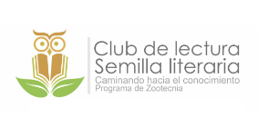
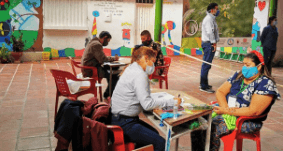
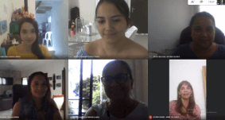

Celee oferta Curso Intensivo de Inglés
El Centro de Formación en Lectura y Escritura en Lengua Castellana y Lenguas Extranjeras (Celee), ofrece el curso intensivo de inglés, periodo de vacaciones modalidad virtual I semestre de 2021.
Los interesados pueden realizar el proceso de inscripción mediante el siguiente enlace: ingles.ufpso.edu.co.
La fecha de inscripción y pago será del 18 al 21 de enero y la matrícula del 19 al 23 de enero de 2021.
Programa de Zootecnia creó Club de Lectura Semilla Literaria
Las actividades comenzarán durante el primer semestre de 2021.
UFPS Seccional Ocaña será la operadora del Proyecto Ecosembrando
La iniciativa beneficiará a 90 familias.
Positivo balance de gestiones y actividades del proceso de autoevaluación
Durante el 2020 se realizó un trabajo permanente para alcanzar las metas trazadas.